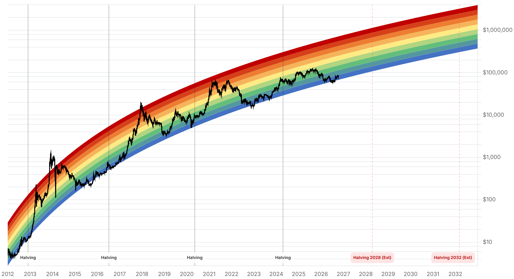

Reporte financiero
BTC cotiza en USD 83.667,40 en vivo (07:23 UTC), +2,34% frente al cierre de ayer (USD 81.754,48) -pero el movimiento es un rebote dentro de un día de alta volatilidad, no una continuación lineal de la ruptura alcista reportada ayer-. Durante la sesión el precio llegó a testear el soporte de USD 81.000 (mínimo intradía USD 81.197,99), presionado por una venta generalizada en acciones tecnológicas globales y por la primera salida neta semanal de los ETF spot de Bitcoin desde comienzos de septiembre (-USD 680M aprox. según SoSoValue/Bitfinex, la mayor desde fines de junio), antes de recuperar gran parte del terreno perdido. El Fear & Greed Index retrocede de 69 a 57, revirtiendo buena parte del salto de ayer y moderando el optimismo. Como contrapeso, se registraron dos señales nuevas con sesgo constructivo: (1) Strategy (Michael Saylor) sumó 250 BTC más (~USD 21,5M) a su balance, llevando sus holdings a 848.250 BTC, además de recomprar USD 192,4M de sus preferentes STRC hasta el 11 de octubre; y (2) un analista de Mudrex señaló el primer cruce alcista de medias móviles semanales 13/34 en 3,5 años, una señal técnica de mediano plazo que no se ve desde antes del ciclo bajista anterior. En el frente Tether/Cantor Fitzgerald no hay novedad desde la respuesta pública de Tether reportada ayer -el plazo de Cantor Fitzgerald para responder al pedido de registros del senador Blumenthal sigue siendo el 23 de octubre-. Tampoco hay desarrollo nuevo en la Clarity Act (sigue estancada desde el cloture fallido del 15 de septiembre) ni en el cronograma de ETF de Bitcoin/Ether en Tailandia (marco regulatorio vigente desde el 16 de octubre, todavía sin ningún fondo listado). El catalizador inmediato es el IPC de septiembre de EE.UU., que se publica mañana 14 de octubre (consenso ~3,6-3,7% interanual, núcleo ~2,4%; un dato de núcleo mensual de 0,2% o menos destensaría rendimientos, mientras que 0,3% o más presionaría a la baja, con el riesgo extremo de empujar a BTC bajo USD 80.000 según BTSE) -y a eso se suma el discurso del presidente de la Fed, Warsh, el viernes 16 de octubre.
Tras romper ayer hacia la zona de resistencia USD 83.400-85.400, hoy el precio retrocedió hasta un mínimo intradía de USD 81.197,99 -dentro del rango de soporte USD 80.000-81.000 señalado por varios analistas (Giottus, Delta Exchange)- antes de recuperar terreno hasta USD 83.667,40 en vivo (+2,34% frente al cierre de ayer de USD 81.754,48). La presión bajista se atribuye a una venta generalizada en acciones tecnológicas a nivel global, con la que Bitcoin mantiene alta correlación, más que a un catalizador propio de cripto. La resistencia inmediata se ubica en USD 82.900-84.500, con un nivel más alto en USD 86.000-87.000.
Según datos de SoSoValue/Bitfinex citados hoy, los ETF spot de Bitcoin en EE.UU. registraron salidas netas de aproximadamente USD 680M en la última semana -la primera salida semanal neta desde comienzos de septiembre y la mayor desde fines de junio-. Esto actualiza el vacío de datos diarios que se reportó ayer para el 10 y 11 de octubre (Farside/TFTC siguen sin publicar el desagregado diario de esos días, con el último dato diario confirmado todavía en +USD 21,1M del 9 de octubre). Un analista de Bitfinex señaló que los flujos de ETF necesitan volver a entradas netas, aunque sean pequeñas, para que Bitcoin pueda recuperar de forma sostenida los USD 84.000.
El índice de sentimiento bajó 12 puntos en un día, revirtiendo gran parte del salto de 61 a 69 reportado ayer. Se mantiene en zona 'Greed' pero con una convicción claramente menor, consistente con el testeo del soporte de USD 81.000 durante la sesión.
Michael Saylor/Strategy compró 250 BTC adicionales (~USD 21,5M) desde la compra de 334 BTC divulgada el 5 de octubre, llevando sus holdings totales a 848.250 BTC -se mantiene la cadencia de acumulación pese a la volatilidad de la semana-. La compañía también recompró USD 192,4M de sus acciones preferentes STRC hasta el 11 de octubre. Por el lado técnico, un analista de Mudrex destacó el primer cruce alcista de las medias móviles semanales de 13 y 34 periodos en 3,5 años -una señal de mediano plazo que contrasta con la salida neta de ETF de la misma semana y que todavía no tiene confirmación de otras fuentes.
No hay desarrollo nuevo desde la respuesta pública de Tether reportada ayer (defensa general sobre el congelamiento de ~USD 550M en USDT vinculado a Irán); el plazo de Cantor Fitzgerald para responder al pedido de registros del senador Blumenthal sigue vigente hasta el 23 de octubre, sin que la firma se haya pronunciado todavía. Tampoco hay avance en la Clarity Act desde el cloture fallido del 15 de septiembre (49 a favor, 11 votos por debajo de los 60 necesarios, ningún demócrata a favor) ni en el cronograma de ETF de Bitcoin/Ether en Tailandia, cuyo marco regulatorio entra en vigor el 16 de octubre sin que haya todavía un fondo listado en la Bolsa de Tailandia.
| Periodo | Valor |
|---|---|
| 7 oct | 83275.93 |
| 8 oct | 81676.34 |
| 9 oct | 82546.32 |
| 10 oct | 82912.23 |
| 11 oct | 83679.47 |
| 12 oct | 81762.56 |
| 13 oct (en vivo) | 83667.4 |
| Periodo | Valor |
|---|---|
| Fear & Greed | 57 |

El precio testeó el soporte de USD 81.000 y rebotó a USD 83.667 en vivo, en un día de alta volatilidad marcado por venta tecnológica global y la primera salida neta semanal de ETF desde comienzos de septiembre (-USD 680M aprox.). El catalizador inmediato es el IPC de septiembre, que se publica mañana 14 de octubre (consenso ~3,6-3,7% interanual, núcleo ~2,4%): un núcleo mensual de 0,2% o menos destensaría rendimientos, mientras que 0,3% o más presionaría a la baja, con riesgo de empujar el precio bajo USD 80.000 según BTSE. La resistencia inmediata se ubica en USD 82.900-84.500 y luego USD 86.000-87.000; el soporte relevante queda en USD 80.000-81.000. Se suma como catalizador el discurso del presidente de la Fed, Warsh, el viernes 16 de octubre.
Sin cambios desde ayer: el rango base de QCP Capital para el Q4 (USD 80.000-90.000) no se modifica, y el deterioro del outlook de la Clarity Act (cloture fallido, análisis de Orrick, ~30-32% en Polymarket) sigue debilitando la pata alcista hacia USD 100.000. Tailandia mantiene su canal institucional acotado (marco de ETF locales vigente desde el 16 de octubre, sin fondos listados todavía). La escalada regulatoria sobre Tether no tiene novedad desde la respuesta pública de la empresa reportada ayer; el plazo de Cantor Fitzgerald (23 de octubre) sigue siendo el próximo punto de inflexión a vigilar. Como nuevo elemento a monitorear de mediano plazo, el primer cruce alcista de medias móviles semanales 13/34 en 3,5 años (Mudrex) es una señal técnica a confirmar con más datos, no todavía una tendencia establecida.
Sin cambios en los objetivos de precio de largo plazo ya reportados en ediciones anteriores (Citigroup, Bernstein, Standard Chartered, Tom Lee, NYDIG, Armstrong) ni en el trasfondo regulatorio de fondo más allá de lo ya detallado arriba. La acumulación continuada de Strategy (ahora 848.250 BTC) refuerza la narrativa de demanda institucional estructural, sin que eso cambie los rangos ya proyectados.
El precio pasó de testear el soporte de USD 81.000 a recuperar USD 83.667 en el mismo día, en un contexto de venta tecnológica global más que de un catalizador propio de Bitcoin. El IPC de septiembre (14 de octubre) es el dato que puede confirmar o revertir este rebote -un núcleo mensual de 0,3% o más introduce riesgo de nueva presión hacia el soporte de USD 80.000.
La primera salida neta semanal desde comienzos de septiembre (-USD 680M aprox.) es, según Bitfinex, la condición a revertir para que el precio recupere los USD 84.000 de forma sostenida. Mientras no se confirme el desagregado diario del 10-13 de octubre (todavía no publicado por Farside/TFTC), tratar la cifra semanal como una señal de cautela, no de salida de capital generalizada.
La compra adicional de 250 BTC (holdings en 848.250 BTC) y la recompra de preferentes STRC confirman que Strategy mantiene su cadencia de acumulación pese a la volatilidad de la semana, pero una sola posición compradora no sustituye la confirmación de flujo de ETF ni el resultado del IPC de mañana.